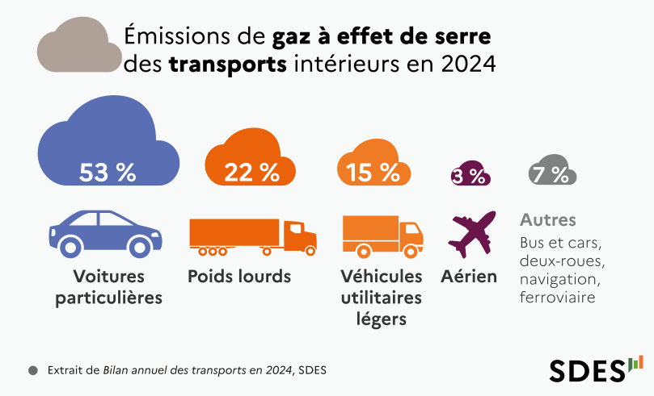

Bilan de la transition énergétique appliquée aux mobilités
La transition énergétique influence directement l'organisation des déplacements sur le territoire de Lisieux Normandie. Dans un contexte national marqué par la hausse des prix de l'énergie et par des objectifs de décarbonation du secteur des transports, le Plan Local de Déplacements (PLD) doit s'adapter pour proposer des solutions de mobilité plus sobres, moins coûteuses et moins émettrices de CO2.
Ce bilan présente les principaux enjeux énergétiques liés aux transports, les impacts actuels sur les habitants et les perspectives d'évolution pour la décennie à venir.
1. Un contexte énergétique qui transforme les besoins de mobilité
Le secteur des transports représente aujourd'hui la première source d'émissions de gaz à effet de serre en France. Les hausses successives des prix du carburant et les tensions sur l'approvisionnement énergétique ont renforcé la nécessité de proposer des alternatives à la voiture individuelle.
Pour le territoire de Lisieux Normandie, marqué par une forte proportion de communes rurales et périurbaines, cette transition est essentielle afin de :
- réduire la dépendance aux carburants fossiles,
- diminuer les coûts de déplacement pour les ménages,
- améliorer l'attractivité et la cohésion du territoire.
2. Les impacts sur les habitants du territoire
La crise énergétique a eu plusieurs conséquences directes sur les habitudes de déplacement :
Dépendance élevée à la voiture
La majorité des trajets domicile–travail se fait en voiture, faute d'alternatives suffisamment régulières ou adaptées dans certaines communes.
Hausse du coût des déplacements
La montée des prix du carburant augmente les dépenses des ménages, en particulier pour les habitants des villages éloignés des pôles urbains de Lisieux et Orbec.
Nouveaux besoins et nouvelles attentes
Les habitants expriment désormais :
- un besoin de solutions de transport plus économiques,
- un intérêt croissant pour les mobilités douces (vélo, marche),
- une demande de transports collectifs plus accessibles et plus fréquents,
- un intérêt pour les véhicules plus sobres (électriques ou hybrides) si des bornes de recharge sont disponibles.
Cette infographie montre la part des émissions liées aux différents modes de transport, soulignant l'importance de réduire l'usage de la voiture individuelle et de promouvoir des alternatives plus durables.

3. Limites et défis actuels du territoire
Plusieurs contraintes freinent encore la transition énergétique dans les déplacements :
- Faible maillage de transports collectifs dans certaines zones rurales.
- Réseau cyclable fragmenté, ne permettant pas encore des déplacements à vélo sécurisés entre les communes.
- Manque d'infrastructures pour véhicules électriques, notamment dans les communes éloignées.
- Habitudes fortement ancrées d'usage de la voiture individuelle, souvent par nécessité faute d'alternatives.
Ces limites doivent être intégrées dans la stratégie du PLD pour adapter les solutions proposées aux réalités du terrain.
4. Perspectives pour les mobilités de demain
Le PLD peut s'appuyer sur plusieurs leviers pour accélérer la transition énergétique du territoire :
- Développer l'offre de transports collectifs, avec des lignes plus régulières et mieux connectées aux pôles d'activités.
- Renforcer les infrastructures cyclables, pour permettre des trajets sécurisés entre les communes.
- Installer davantage de bornes de recharge électriques, afin d'encourager l'usage de véhicules propres.
- Promouvoir le covoiturage, notamment sur les axes structurants.
- Créer des solutions de mobilité innovantes : transport à la demande, navettes locales, pôles de mobilité.
- Accompagner les habitants vers la sobriété énergétique : information, sensibilisation, incitation à diversifier les modes de transport.
Ces actions permettront de réduire la dépendance aux carburants fossiles, de limiter les coûts de déplacement et de proposer une mobilité plus durable pour tous les habitants.